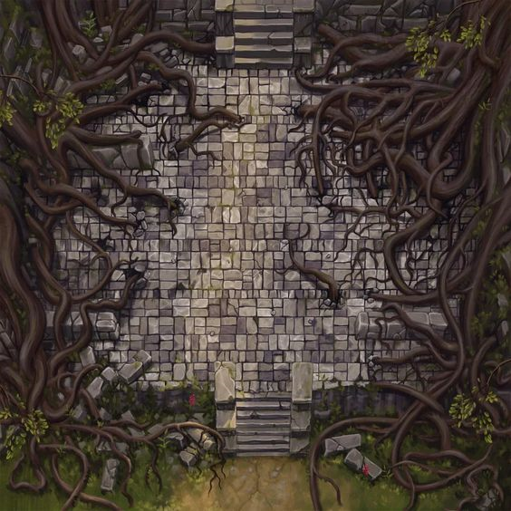
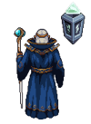

스프라이트 클래스
pygame.sprite.Sprite를 상속해 마법사, 미사일, 몬스터를 각각 클래스로 나누고 그룹으로 관리했습니다.
pygame으로 만든 세로 슈팅 게임입니다. 마법사가 마법 미사일로 위에서 내려오는 몬스터를 막습니다. 몬스터에 부딪히거나 6마리를 놓치면 끝납니다. 원본 그림과 효과음을 그대로 써서 웹에서 플레이할 수 있게 옮겼습니다.
게임 화면을 누르거나 Space로 시작합니다. 방향키로 움직이고 Space로 미사일을 쏩니다. 원본처럼 키를 누를 때마다 속도가 5씩 붙습니다.
pygame.sprite.Sprite를 상속해 마법사, 미사일, 몬스터를 각각 클래스로 나누고 그룹으로 관리했습니다.
잡은 몬스터 수에 따라 한 번에 나오는 수와 내려오는 속도가 함께 올라갑니다. 웹 체험판은 처음엔 천천히 1마리씩 내려오다가 잡을수록 점점 빨라지고 많아지게 맞췄습니다.
미사일과 몬스터, 마법사와 몬스터의 사각형 충돌을 매 프레임 확인해 폭발과 게임 오버를 처리합니다.
assets/virus 폴더의 그림 중 하나를 무작위로 골라 몬스터마다 다른 모습으로 나오게 했습니다.
발사음, 폭발음 3종, 게임 오버 효과음과 반복 배경음악을 넣었습니다.
resource_path()로 리소스 경로를 처리해 PyInstaller로 만든 .exe에서도 그림과 소리가 열리게 했습니다.


sys._MEIPASS)에 풀어 두기 때문에 상대 경로가 맞지 않았습니다.resource_path() 함수를 만들어 .exe일 때는 임시 폴더, 아닐 때는 현재 폴더를 기준으로 경로를 만들었습니다.dx = 0, 위아래 키면 dy = 0으로 멈추게 했습니다.kill()로 그룹에서 지우고, 놓친 몬스터는 그때 세도록 했습니다.pygame.sprite.Sprite 상속과 스프라이트 그룹으로 객체를 관리하는 방법